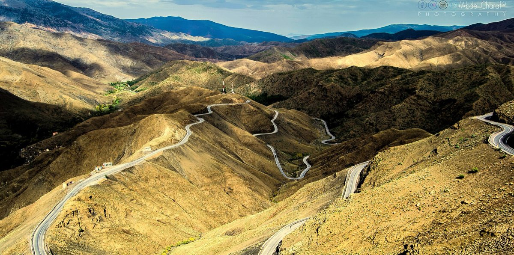

Tizi n'Tichka pass تيزي ن تيشكا
2,260 m · the N9 road
The highest major road pass in North Africa. "Tizi" is the Amazigh (Berber) word for a mountain pass. The road was built by the French army and opened in 1936, replacing a mule track that caravans had used for centuries to carry salt, dates and gold between the Sahara and Marrakech.
On the way up you pass Amazigh villages built from the same red earth as the slopes, walnut trees along the streams, and roadside stalls selling amethyst and quartz geodes.
- Whoever held this pass controlled trade across the Atlas. In the early 1900s it was the Glaoui family, whose leader Thami El Glaoui became Pasha of Marrakech (1912–1956) and one of the richest men in the world. His abandoned kasbah at Telouet is just off the road.
- The High Atlas runs about 800 km across Morocco. Jbel Toubkal (4,167 m), the highest peak in North Africa, is roughly 50 km west of the pass.
- It can be 5–10 °C at the top even when Marrakech is warm. Keep a jacket in the car, and take motion-sickness tablets if you need them; there are a lot of hairpins.